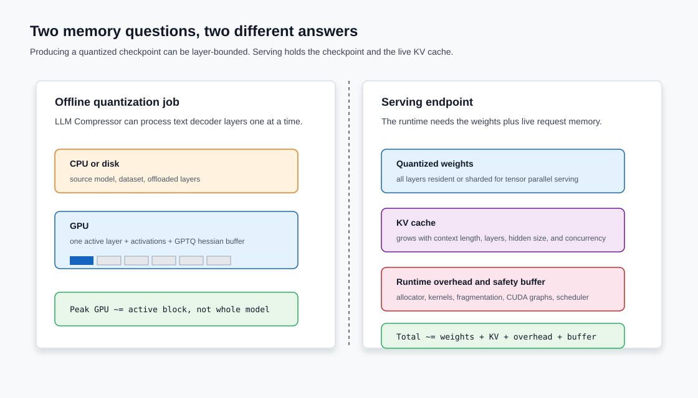
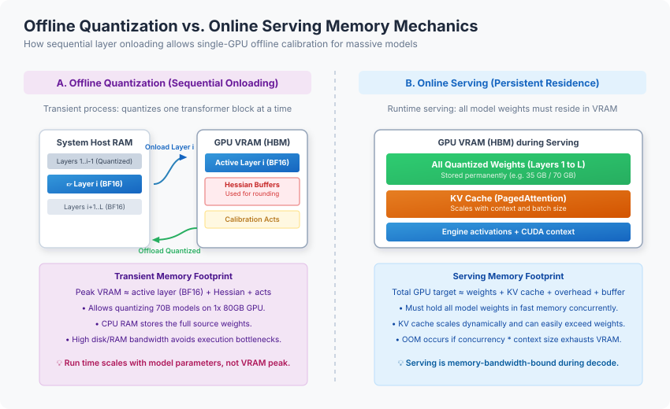
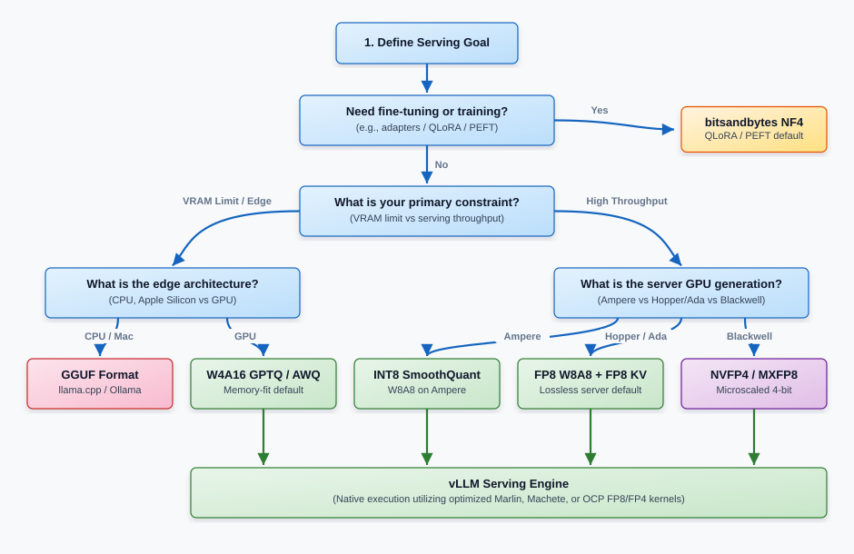
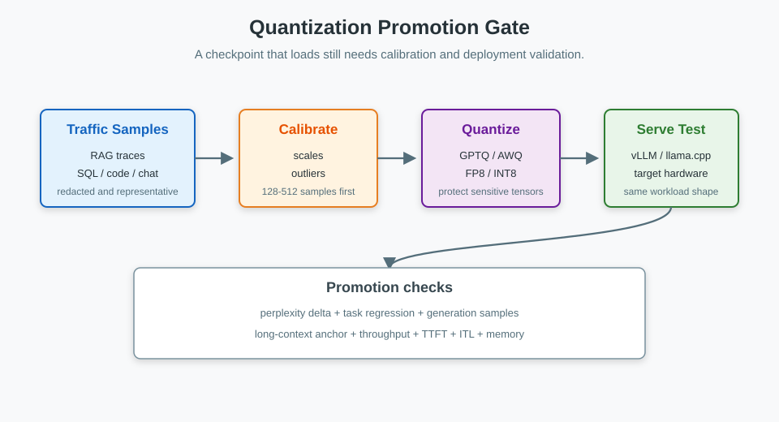

Model Quantization in 2026: From Foundations to Production Serving
Quantization is not a single optimization. It is a set of trade-offs between weight memory, activation compute, KV cache size, runtime kernels, calibration data, and quality regression.
The useful question is not "How many bits can I remove?" The useful question is "Which bottleneck am I solving?" A 4-bit checkpoint can fit a model into VRAM and still be slower than expected if the serving kernel is wrong. FP8 can improve high-throughput serving and still fail on unsupported hardware. KV cache quantization can matter more than weight quantization once long context and concurrency dominate memory.
TL;DR: Start with the bottleneck. Use W4A16 GPTQ/AWQ when weight memory is the limit and decode is memory-bandwidth-bound. Use FP8 W8A8 when you serve at high throughput on Ada, Hopper, or newer GPUs with native FP8 kernels. Add FP8 KV cache when long context or concurrency makes cache memory larger than the weights. Use GGUF/MLX for CPU, Apple Silicon, and edge runtimes. Use NF4 for QLoRA-style fine-tuning, not as the default production serving artifact. For diffusion models, treat the image pipeline separately and keep sensitive components such as the VAE in higher precision.

1. The Operating Decision
Before choosing GPTQ, AWQ, FP8, GGUF, or NF4, decide what is actually limiting the system.
| Bottleneck | Good first move | Why | Main validation |
|---|---|---|---|
| Weight memory | W4A16 GPTQ or AWQ | Cuts weight traffic and lets larger models fit. | Perplexity, task evals, generation samples. |
| High-batch compute | FP8 W8A8 | Lets weights and activations use low-precision tensor cores. | Throughput, TTFT, ITL, task accuracy. |
| Long context or concurrency | FP8 KV cache | Halves KV cache memory when cache dominates VRAM. | Long-context retrieval and instruction checks. |
| CPU, Apple Silicon, edge | GGUF or MLX quantization | Matches the runtime family instead of forcing CUDA assumptions. | Local latency, RAM pressure, prompt quality. |
| Low-memory fine-tuning | NF4 QLoRA | Reduces training memory for adapter workflows. | Fine-tuning loss, downstream eval, merged-adapter serving. |
| Image-model local inference | SVDQuant/Nunchaku path | Handles diffusion activation outliers differently from text LLMs. | Visual inspection, prompt adherence, latency, VRAM. |
This framing also explains why benchmark posts can disagree. One guide may measure an H200 vLLM path with Marlin kernels. Another may explain quantization math without serving kernels. A third may focus on static INT8 calibration. All can be correct inside their own deployment context.
2. The Core Concept: From Float to Buckets
Quantization maps high-precision values into a smaller set of representable values. You save memory and bandwidth, but you introduce rounding error.
Think of rounding prices to the nearest dollar. You store fewer digits, but you lose cents. That is acceptable for a rough budget and unacceptable for payroll. Neural networks have the same shape of problem. A BF16 weight can represent subtle variation. INT4 gives you 16 buckets. If the rounded values preserve the model's useful behavior, you gain capacity. If a sensitive layer or outlier channel is rounded badly, reasoning, instruction following, or visual quality can regress.
Symmetric and Asymmetric Mapping
Quantization maps a continuous set of float values \(x \in [\beta, \alpha]\) to a discrete grid of integer or low-precision floating-point values.
- Symmetric quantization centers the grid around zero and usually sets the zero point to
0: $\(s = \frac{\max(|x|)}{q_{\max}}\)$ $\(x_q = \text{clip}\left(\text{round}\left(\frac{x}{s}\right), q_{\min}, q_{\max}\right)\)$ - Asymmetric quantization uses a shifted zero point to cover skewed ranges more efficiently: $\(s = \frac{\alpha - \beta}{q_{\max} - q_{\min}}\)$ $\(z = \text{round}\left(\frac{-\beta}{s}\right) + q_{\min}\)$ $\(x_q = \text{clip}\left(\text{round}\left(\frac{x}{s}\right) + z, q_{\min}, q_{\max}\right)\)$
The scale (\(s\)) and zero point (\(z\)) are only the beginning. Quality also depends on scaling granularity, protected tensors, calibration data, and the execution kernel.

Scaling Granularity
- Per-tensor: one scale for the whole tensor. It is simple, but one outlier can waste most of the grid.
- Per-channel: one scale per output channel or matrix row. This is a common default for LLM weights.
- Per-group or block: one scale per small block, such as 128 weights. This is the practical sweet spot for many 4-bit weight-only formats.
For weights, group-wise symmetric or asymmetric quantization is common. For activations, dynamic scales are often safer because activation distributions change with the prompt, token position, batch, and layer.
3. PTQ, Dynamic Quantization, Static Quantization, and QAT
Hugging Face's Optimum guide draws a useful distinction between when the ranges are computed.
| Method | When ranges are computed | Good fit | Trade-off |
|---|---|---|---|
| Dynamic PTQ | At runtime for each activation path. | Quick experiments and safer activation handling. | Runtime overhead and hardware support limits. |
| Static PTQ | Before serving with representative calibration data. | Production INT8/W8A8 flows where speed matters. | Calibration data must match traffic. |
| QAT | During training with fake-quantization operators. | Cases where PTQ can't recover quality. | Requires training infrastructure and more time. |
| Weight-only PTQ | Offline for model weights. | W4A16/W8A16 serving when weight memory is the limit. | Activation compute usually remains 16-bit. |
This matters because calibration is not ceremony. If your production prompts are long RAG traces, calibrating on short Wikipedia paragraphs can give clean-looking metrics and weak production behavior. Calibration should cover sequence length, formatting, domain vocabulary, tool traces, refusal patterns, and the types of tasks the model actually serves.
4. The 2026 Precision Landscape
Modern serving uses several precision families. The right one depends on the runtime and hardware.
| Format | Typical bytes | Use it when | Watch for |
|---|---|---|---|
| BF16 / FP16 | 2 bytes | Baseline quality, training-friendly serving, broad compatibility. | High memory bandwidth and weight footprint. |
| FP8 (OCP) | 1 byte | High-throughput W8A8 serving on Ada, Hopper, and newer GPUs. | Needs native kernels and runtime support. |
| INT8 | 1 byte | W8A8 serving on broader GPU stacks through methods such as SmoothQuant. | Activation outliers and static calibration quality. |
| INT4 | 0.5 bytes | W4A16 serving when weight memory is the limit. | Quality regressions on smaller or reasoning-heavy models. |
| FP4 / NVFP4 | ~0.5 bytes | Blackwell-era low-precision experiments and supported runtimes. | Hardware-specific, version-sensitive support. |
| GGUF | Variable | llama.cpp, Ollama, CPU, Apple Silicon, desktop, edge. | Not the default path for high-concurrency vLLM serving. |
| NF4 | 0.5 bytes | QLoRA and fast low-memory experiments. | Great for fine-tuning; not the default production export format. |
BF16 keeps the exponent range of FP32 and is the common baseline for modern model releases. FP16 has more mantissa precision but less exponent range, which makes overflow more likely during spikes.
FP8 usually means OCP-style E4M3 or E5M2. E4M3 favors precision and is common for forward-pass weights and activations. E5M2 has wider range and is useful for more volatile values. On supported hardware, FP8 is a serving format, not just a storage format.
Microscaling formats such as MXFP8 and NVFP4 group values into small blocks with shared scale factors. They are promising on Blackwell-class systems, but they should be treated as hardware and runtime specific until your stack proves support end to end.
5. Weight-Only vs. Weight-Activation Quantization
The notation WxAy says how many bits are used for weights and activations.

Weight-Only Quantization (W4A16 / W8A16)
Weights are stored in low precision, while activations stay in BF16 or FP16. During inference, the kernel loads compressed weights and dequantizes them for computation.
- Use it for memory-bandwidth-bound decode, low batch sizes, single-stream local chat, and fitting a model into smaller VRAM.
- Do not expect automatic tensor-core speedups. The matrix multiply can still behave like a 16-bit operation after dequantization.
Weight-Activation Quantization (W8A8 / W4A4)
Weights and activations are both low precision, so the runtime can use lower-precision compute paths when the hardware supports them.
- Use it for prefill, high batch sizes, continuous batching, and throughput-oriented serving.
- Validate carefully because activations are volatile. Unsupported hardware can silently turn the intended speedup into dequantization overhead.
6. Kernels Matter as Much as Algorithms
The algorithm decides how the checkpoint is quantized. The runtime kernel decides whether the quantized checkpoint is actually fast.

JarvisLabs' vLLM benchmark is a useful example. On Qwen2.5-32B-Instruct with an H200, their summary reported:
| Technique | Perplexity | Pass@1 | Throughput | TTFT |
|---|---|---|---|---|
| FP16 baseline | 6.56 | 56.1% | 461 tok/s | 57.7 ms |
| AWQ | 6.84 | 51.8% | 68 tok/s | 277.8 ms |
| GPTQ | 6.90 | 46.3% | 277 tok/s | 107.1 ms |
| Marlin-GPTQ | 6.97 | 45.7% | 712 tok/s | 51.9 ms |
| Marlin-AWQ | 6.84 | 51.8% | 741 tok/s | 73.5 ms |
| GGUF Q4_K_M | 6.74 | 51.8% | 93 tok/s | 958.0 ms |
| bitsandbytes | 6.67 | 51.8% | 168 tok/s | 135.3 ms |
Do not copy those numbers into your capacity plan. They are one model, one hardware class, and one benchmark setup. The lesson is more durable: AWQ/GPTQ are not enough by themselves. The fused kernel path can decide whether 4-bit is fast or just small.
Use vLLM's own benchmark commands to measure your target stack:
vllm bench serve \
--model ./outputs/Qwen2.5-32B-Instruct-AWQ-W4A16 \
--dataset-name sharegpt \
--num-prompts 200 \
--input-len 1024 \
--output-len 256
Measure baseline BF16, the quantized checkpoint, and any kernel-specific variant under the same prompt mix. Track throughput, TTFT, inter-token latency, memory use, and quality gates.
7. The Quantization Algorithm Menu
| Algorithm | Common format | Objective | Trade-off | Status |
|---|---|---|---|---|
| GPTQ | W4A16 | Minimize layer-wise reconstruction error with inverse-Hessian information. | Higher calibration cost. | Production option for weight-only INT4. |
| AWQ | W4A16 / W4A8 | Protect salient channels based on activation-aware scaling. | Needs calibration and fused kernels. | Production option for weight-only INT4. |
| SmoothQuant | W8A8 | Move quantization difficulty from activations to weights. | Needs scaling-strength tuning. | Practical INT8 activation path. |
| QuaRot / SpinQuant | W4A4 / W4A8 | Rotate activations and weights to reduce outliers. | Runtime support and online transforms matter. | Advanced low-bit research/production frontier. |
| HQQ | W4A16 / W2A16 | Fast data-free reconstruction optimization. | Can trail GPTQ/AWQ quality at very low bit-widths. | Good for quick runs. |
| bitsandbytes NF4 | W4A16-ish runtime loading | Low-memory fine-tuning and experiments. | Not a clean vLLM production export. | QLoRA default. |
| GGUF K-quants | Mixed low-bit | Local CPU, Apple Silicon, llama.cpp, Ollama. | Not built for high-concurrency CUDA serving. | Desktop and edge default. |
Adjacent Compression Techniques
Sparsity and distillation are useful, but they are not the same decision as post-training quantization.
2:4 structured sparsity forces exactly two of every four weights to zero so sparse tensor cores can skip work. SparseGPT and Wanda are common ways to enforce sparsity after training. Newer approaches such as SlideSparse try to preserve more flexible sparsity patterns while mapping them onto 2:4 hardware. Treat these as adjacent compression paths: they can combine with quantization, but they need separate benchmark and quality gates.
Distillation replaces the model with a smaller trained student. It can beat checkpoint compression for recurring narrow tasks, but it requires task data, training, and a different evaluation loop.
8. Serving Memory: Weights, KV Cache, and Runtimes
A common mistake is to size only the quantized weights. Serving memory is larger:

Offline Quantization
Quantization tools such as llm-compressor can process one transformer block at a time. The tool loads a layer, runs calibration, computes scales or Hessian-derived updates, writes the quantized block, and moves on.

Peak quantization memory is closer to:
The host still needs enough CPU RAM and disk to hold or stream the unquantized model.
Online Serving
At serve time, the model has to stay resident with cache and runtime overhead. For long context, the KV cache can exceed the weight footprint:
Where \(L\) is layers, \(H_{\text{kv}}\) is KV heads, \(D\) is head dimension, \(S_{\text{ctx}}\) is context length, and \(B_{\text{batch}}\) is concurrent batch size.
For a 70B-class model with long context, FP8 KV cache and PagedAttention can matter more than shaving another bit from the weights. Validate this with long-context probes, not only short perplexity runs.
9. Sizing, Selection, and Hardware Matrix
Use the selection map as a first pass, then benchmark on the target runtime.

Weights-Only Footprint
| Model size | BF16 weights | FP8/INT8 weights | INT4 weights |
|---|---|---|---|
| 7B / 8B | ~14 - 16 GB | ~7 - 8 GB | ~3.5 - 4 GB |
| 14B | ~28 GB | ~14 GB | ~7 GB |
| 32B / 34B | ~64 - 68 GB | ~32 - 34 GB | ~16 - 17 GB |
| 70B | ~140 GB | ~70 GB | ~35 GB |
| 109B MoE | ~218 GB active+inactive weights | ~109 GB | ~55 GB |
Hardware Compatibility
- CPU: GGUF, OpenVINO/ONNX INT8, runtime-specific kernels.
- Apple Silicon: GGUF, MLX quantization, unified-memory sizing.
- Ampere (A100, RTX 3090): INT8 and INT4 weight-only paths; no native FP8 tensor core path.
- Ada (RTX 4090, L40S, L4): FP8-capable tensor cores, useful for FP8 W8A8 when runtime support is present.
- Hopper (H100, H200): strong FP8 serving target, more memory headroom on H200.
- Blackwell (B200/B300, RTX 5090 class): target for NVFP4/MXFP4 and newer microscaling formats, subject to runtime support.
10. Calibration and Evaluation Gate
Quantization is not done when the model loads. It is done when the compressed model passes the promotion gate for the target workload.

Calibration Checklist
- Use representative prompts: RAG traces, SQL tasks, chat logs, coding prompts, customer-support turns, or tool traces from the target workload.
- Include production sequence lengths, not only short examples.
- Keep embeddings and
lm_headin higher precision unless you have measured the impact. - Use enough samples to stabilize scales. For many PTQ flows, 128 to 512 examples is a practical starting range.
- Redact sensitive data before using internal traces.
Evaluation Checklist
- Perplexity catches broad language-modeling regression.
- Task metrics catch benchmark or workflow regression, such as HellaSwag, HumanEval, MMLU, AIME, or domain-specific tests.
- Generation comparisons catch instruction-following and formatting failures.
- Long-context probes catch KV-cache and context-window regressions.
- Serving benchmarks catch throughput, TTFT, ITL, and memory regressions.
The pass/fail threshold should be explicit before you run the quantization job. A useful default is: small perplexity delta, bounded task regression, no obvious long-context miss, and serving latency that improves the bottleneck you intended to fix.
11. Practical Workflow With the Companion Repo
The companion repository is slavadubrov/model-compression-demo. It is dependency-light by default and uses uv.
Clone and inspect available methods:
git clone https://github.com/slavadubrov/model-compression-demo.git
cd model-compression-demo
uv run python demo.py list-algorithms
Plan memory for a model and target hardware:
uv run python demo.py plan \
--model-preset llama3-8b \
--goal fit-memory \
--hardware ampere \
--context 4096 \
--concurrency 4
Estimate weight and KV-cache memory explicitly:
uv run python demo.py estimate \
--model-preset llama3-8b \
--scheme w4a16 \
--context 8192 \
--concurrency 8
Generate the reference quantization recipe:
uv run python demo.py recipe --algorithm gptq-w4a16
Dry-run a representative calibration job before using real GPU dependencies:
uv run python demo.py quantize \
--algorithm gptq-w4a16 \
--model Qwen/Qwen3-0.6B \
--calibration-file examples/representative_calibration.jsonl \
--text-column text \
--dry-run
Generate a vLLM serving command for FP8 plus FP8 KV cache:
uv run python demo.py serve-command \
--algorithm fp8-dynamic \
--fp8-kv-cache \
--enable-prefix-caching
Generate a reproducible benchmark plan. This creates commands; it doesn't claim the benchmark has run on your GPU:
uv run python demo.py benchmark-plan \
--model Qwen/Qwen2.5-32B-Instruct \
--algorithms gptq-w4a16,awq-w4a16,bnb-nf4,gguf-q4 \
--dataset-name sharegpt \
--num-prompts 200 \
--input-len 1024 \
--output-len 256 \
--output-json reports/quantization-benchmark-plan.json
Run the quality gate before promoting a compressed checkpoint:
uv run python demo.py quality-eval \
--base-model Qwen/Qwen3-0.6B \
--compressed-model outputs/Qwen3-0.6B-W4A16 \
--mode all \
--lm-eval-task hellaswag \
--lm-eval-limit 50 \
--max-perplexity-delta-pct 5 \
--max-task-regression 0.02 \
--output-json reports/qwen3-0.6b-w4a16-quality.json
12. Diffusion and Image Models Are a Separate Path
Diffusion and Diffusion Transformer models don't behave like autoregressive LLMs. They run multiple denoising steps, and activation distributions shift over the denoising path. Naive PTQ can create visible artifacts even when the model still "runs."
Practical rules:
- Keep the VAE in high precision unless you have measured visual degradation.
- Quantize the DiT or transformer backbone first because it usually gives the largest memory and compute savings.
- Treat text encoders separately. Prompt alignment can degrade even when image texture looks fine.
- Use image-specific methods such as SVDQuant/Nunchaku for FLUX-style local workflows.
- Evaluate with prompt adherence, text rendering, color/texture artifacts, latency, and VRAM, not text perplexity.
13. Default Serving Stack
For server LLMs:
- Establish a BF16/FP16 baseline in the target serving engine.
- If throughput is the goal and hardware supports it, test FP8 W8A8.
- If weight memory is the goal, test GPTQ/AWQ W4A16 with the intended runtime kernel.
- If context/concurrency is the goal, add FP8 KV cache and long-context probes.
- Promote only after quality and serving benchmarks pass.
For local inference:
- Start with GGUF Q4_K_M or Q5_K_M.
- Use Q8_0 when memory allows and quality matters more than footprint.
- Avoid going below 4 bits unless the hardware constraint is non-negotiable.
For fine-tuning:
- Use NF4 QLoRA for memory-efficient adapter training.
- Evaluate the adapter in the same task shape as production.
- Export or merge into a serving-specific artifact if the model will be deployed.
Key Takeaways
- Quantization is controlled rounding plus runtime execution: Bit-width alone doesn't determine quality or speed.
- Pick the bottleneck first: weight memory, activation compute, KV cache, local runtime, fine-tuning memory, and image-pipeline memory lead to different choices.
- W4A16 is a memory tool: It helps fit weights and reduce decode traffic, but it doesn't automatically speed up compute-bound batches.
- FP8 is a serving tool: It works best when hardware and runtime kernels support low-precision tensor-core execution.
- Kernels can dominate benchmarks: Marlin, BitBLAS, and runtime-specific paths can matter as much as GPTQ or AWQ.
- KV cache is a first-class memory term: Long context and concurrency can make cache memory larger than quantized weights.
- Calibration data must look like production: Generic text can be useful for smoke tests, but not for final promotion.
- Diffusion quantization is different: Evaluate visual quality and component sensitivity, not only model size.
References
- Maarten Grootendorst Visual Guide: Grootendorst, A Visual Guide to Quantization, 2024. Newsletter.
- JarvisLabs vLLM Benchmarks: JarvisLabs, vLLM Quantization Complete Guide and Benchmarks, 2026. JarvisLabs.
- Hugging Face Optimum Quantization Guide: Hugging Face, Quantization conceptual guide. Docs.
- vLLM Quantization Docs: vLLM project, Quantization. Docs.
- vLLM Benchmark Docs: vLLM project, vllm bench serve. Docs.
- GPTQ: Frantar et al., GPTQ: Accurate Post-Training Quantization for Generative Pre-trained Transformers, NeurIPS 2023. arXiv:2210.17323.
- AWQ: Lin et al., AWQ: Activation-aware Weight Quantization for LLM Compression and Acceleration, MLSys 2024. arXiv:2306.00978.
- SmoothQuant: Xiao et al., SmoothQuant: Accurate and Efficient Post-Training Quantization for Large Language Models, ICML 2023. arXiv:2211.10438.
- QuaRot: Ashkboos et al., QuaRot: Outlier-Free 4-Bit Inference in Rotated LLMs, NeurIPS 2024. arXiv:2404.00456.
- SpinQuant: Meta AI Research, SpinQuant: LLM Quantization with Learned Rotations, arXiv:2405.16406. arXiv:2405.16406.
- SVDQuant / Nunchaku: MIT HAN Lab, SVDQuant: Absorbing Outliers by Low-Rank Components for 4-Bit Diffusion Models, ICLR 2025. arXiv:2411.05007.
- vLLM PagedAttention: Kwon et al., Efficient Memory Management for Large Language Model Serving with PagedAttention, SOSP 2023. vLLM docs.
- vLLM FP8 KV Cache: Kubler, Kurtic, Wilkinson et al., The State of FP8 KV-Cache and Attention Quantization in vLLM, vLLM Blog, April 2026. vLLM Blog.
- LLM Serving Evaluation: Kurtic et al., "Give Me BF16 or Give Me Death"? Accuracy-Performance Trade-Offs in LLM Quantization, ACL 2025. arXiv:2411.02355.
- Reasoning Evaluation: Quantization Hurts Reasoning? An Empirical Study on Quantized Reasoning Models, arXiv:2504.04823. arXiv:2504.04823.
- SlideSparse: SlideSparse: Fast and Flexible (2N-2):2N Structured Sparsity, arXiv:2603.05232v1. arXiv:2603.05232v1.
- Reference Repository: slavadubrov/model-compression-demo.